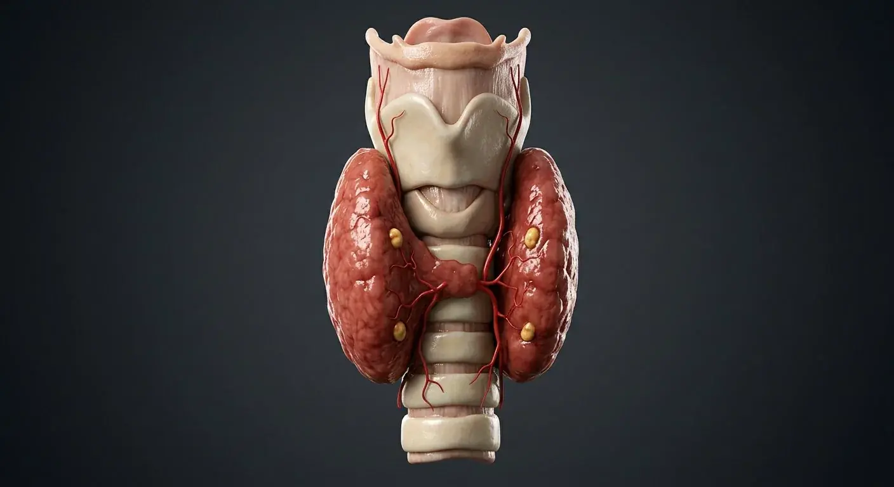

ORGAN → UNDER THE LENS
Thyroid follicles and colloid
Tap to compare the organ region with a tissue-level teaching illustration.
Read about Follicle & colloid ↓Shaped like a butterfly wrapped around the upper windpipe, the thyroid gland stores its own hormone supply inside microscopic colloid spheres called follicles. In this illustrated guide to thyroid gland anatomy, we examine 20 documented structures—including right lobe, left lobe, isthmus, pyramidal lobe—linking regional topography, tissue architecture, physiological mechanisms, and clinical reasoning.

External superior laryngeal nerveSuperior thyroid veinThyroid arteriesSuperior thyroid arteryParathyroid glandsThyroid capsuleRight lobeInferior thyroid arteryRecurrent laryngeal nervePyramidal lobeMiddle thyroid veinLeft lobeIsthmusBerry ligamentInferior thyroid veinsTrachea & larynxShaped like a butterfly wrapped around the upper windpipe, the thyroid gland stores its own hormone supply inside microscopic colloid spheres called follicles. The thyroid is built from follicles — spheres of cuboidal cells filled with colloid, a store of thyroglobulin. Iodide is trapped, oxidised and attached to tyrosine residues to make T3 and T4, released under control of pituitary TSH. These hormones raise basal metabolic rate, oxygen consumption and heat production, and are essential for growth and brain development. Parafollicular C cells secrete calcitonin. Embedded behind the gland, the four parathyroid glands sense calcium and release parathyroid hormone — the minute-to-minute controller of plasma calcium. Within the human body, the thyroid gland (Glandula thyroidea) is situated in anterior neck, C5–T1, in front of trachea and larynx, receives arterial perfusion via superior & inferior thyroid arteries (± thyroidea ima), and is innervated by sympathetic + parasympathetic (vasomotor only; secretion is TSH-driven).
The right lobe (Lobus dexter) is one of two lateral lobes, 5–8 cm long, lying against the trachea and oesophagus and covered by the pretracheal fascia. Physiologically, the right lobe secretes T3/T4 from its follicles. The left lobe (Lobus sinister) is the mirror-image lobe; asymmetry between lobes is common and usually benign. Physiologically, the left lobe secretes T3/T4. The isthmus is the bridge crossing the 2nd–4th tracheal rings, joining the two lobes. Physiologically, the isthmus connects the lobes into a single gland. The pyramidal lobe (Lobus pyramidalis) is a tongue of thyroid tissue ascending toward the hyoid in ~50% of people, a remnant of the thyroglossal duct. Physiologically, the pyramidal lobe governs functionally ordinary thyroid tissue. The trachea & larynx (Trachea et larynx) is the gland wraps the airway; the cricoid cartilage and thyroid cartilage lie above. Physiologically, the trachea & larynx governs anatomical landmark and the reason goitres cause compressive symptoms. The thyroid arteries (Arteriae thyroideae) are superior thyroid (from external carotid) and inferior thyroid (from thyrocervical trunk), with rich anastomoses. Physiologically, the thyroid arteries governs give the gland its extremely high blood flow per gram.
Clinically, regarding the right lobe, an enlarging lobe can compress the trachea (stridor) or the recurrent laryngeal nerve (hoarseness). From a diagnostic standpoint, in the left lobe, a dominant nodule in one lobe is investigated with ultrasound and, if suspicious, fine-needle cytology. In clinical pathology involving the isthmus, it is the landmark for emergency tracheostomy and cricothyroidotomy is performed above it. Medical evaluation of the pyramidal lobe also notes that if left behind at thyroidectomy it can hypertrophy and mimic a recurrent goitre or a midline neck mass.
Connected study pathways in this atlas: Endocrine system, Pancreas, Kidney.
These are educational cutaways, not literal magnifications of an organ pixel or laboratory slides. A ring marks the approximate tissue region; part-specific lines appear only where identifiable.
Tap to compare the organ region with a tissue-level teaching illustration.
Read about Follicle & colloid ↓These 20 structures describe anatomy related to the chapter’s regional illustration. Each entry separates location, function and a clinical point.
One of two lateral lobes, 5–8 cm long, lying against the trachea and oesophagus and covered by the pretracheal fascia.
What it doesSecretes T3/T4 from its follicles.
Clinical connectionAn enlarging lobe can compress the trachea (stridor) or the recurrent laryngeal nerve (hoarseness).
The mirror-image lobe; asymmetry between lobes is common and usually benign.
What it doesSecretes T3/T4.
Clinical connectionA dominant nodule in one lobe is investigated with ultrasound and, if suspicious, fine-needle cytology.
The bridge crossing the 2nd–4th tracheal rings, joining the two lobes.
What it doesConnects the lobes into a single gland.
Clinical connectionIt is the landmark for emergency tracheostomy and cricothyroidotomy is performed above it.
A tongue of thyroid tissue ascending toward the hyoid in ~50% of people, a remnant of the thyroglossal duct.
What it doesFunctionally ordinary thyroid tissue.
Clinical connectionIf left behind at thyroidectomy it can hypertrophy and mimic a recurrent goitre or a midline neck mass.
The gland wraps the airway; the cricoid cartilage and thyroid cartilage lie above.
What it doesAnatomical landmark and the reason goitres cause compressive symptoms.
Clinical connectionRetrosternal extension of a goitre can be read on CT and may require sternotomy to remove.
Superior thyroid (from external carotid) and inferior thyroid (from thyrocervical trunk), with rich anastomoses.
What it doesGive the gland its extremely high blood flow per gram.
Clinical connectionThe superior laryngeal nerve runs with the superior artery and the recurrent laryngeal with the inferior — both at risk in surgery.
Spheres of follicular cells enclosing colloid (iodinated thyroglobulin). TSH stimulates iodide trapping, organification, coupling, and endocytosis of colloid to release T3/T4.
What it doesSynthesis and storage of thyroid hormone — the only endocrine gland that stores its product extracellularly.
Clinical connectionIn Graves disease, autoantibodies to the TSH receptor drive unregulated hormone release and goitre.
Four small glands (occasionally 3–6) on the posterior surface, derived from the third and fourth pharyngeal pouches.
What it doesPTH raises plasma calcium: bone resorption, renal retention and activation of vitamin D.
Clinical connectionAccidental removal or devascularisation at thyroidectomy causes hypocalcaemic tetany and a positive Chvostek sign.
Simple cuboidal epithelial cell bordering a colloid-filled follicle.
What it doesSynthesizes thyroglobulin and releases T3/T4 after processing.
Clinical connectionCell height reflects activity but is not a stand-alone diagnosis.
Extracellular storage material in follicular lumen.
What it doesStores iodinated precursor for thyroid hormones.
Clinical connectionFollicle appearance changes with stimulation.
Endocrine cell between follicles or in follicular epithelium.
What it doesReleases calcitonin.
Clinical connectionMedullary thyroid carcinoma arises from C-cell lineage.
External carotid branch approaching upper thyroid pole.
What it doesSupplies superior gland and adjacent tissues.
Clinical connectionExternal branch of superior laryngeal nerve is nearby.
Thyrocervical trunk branch supplying posterior-inferior thyroid.
What it doesFeeds gland and usually parathyroid region.
Clinical connectionIts relation to recurrent laryngeal nerve varies.
Venous drainage from upper thyroid to internal jugular vein.
What it doesReturns blood from superior thyroid pole.
Clinical connectionVeins need control in neck surgery.
Short vein from lateral gland to internal jugular vein.
What it doesDrains lateral thyroid surface.
Clinical connectionMay be encountered early in gland mobilization.
Variable veins from lower poles entering brachiocephalic venous system.
What it doesDrain lower thyroid and isthmus region.
Clinical connectionAnterior tracheal venous plexus can bleed.
Vagal branch ascending in tracheoesophageal groove toward larynx.
What it doesMotor supply to most intrinsic laryngeal muscles.
Clinical connectionAt risk near posterior thyroid and inferior thyroid artery.
Superior laryngeal branch accompanying superior pole vascular region.
What it doesMotor to cricothyroid for pitch adjustment.
Clinical connectionInjury can impair high-pitched phonation.
Connective-tissue sheath closely adherent to thyroid parenchyma.
What it doesSupports lobules and vascular entry.
Clinical connectionSurgical planes differ from outer pretracheal fascia.
Dense posteromedial attachment of thyroid to cricoid and upper trachea.
What it doesAnchors gland during swallowing.
Clinical connectionRecurrent laryngeal nerve runs close to this region.
Short answers grounded in the structures described above. Use the illustrated guide for anatomical context.
The thyroid has two lateral lobes joined by an isthmus in the front of the neck, close to the larynx and upper trachea. The berry ligament is dense posteromedial attachment of thyroid to cricoid and upper trachea. Physiologically, the berry ligament anchors gland during swallowing.
Follicular cells use iodine and stored thyroglobulin in colloid to produce thyroid hormones. Nearby parafollicular cells produce calcitonin. Structurally, the follicle & colloid (Folliculi thyroidei) comprises spheres of follicular cells enclosing colloid (iodinated thyroglobulin). TSH stimulates iodide trapping, organification, coupling, and endocytosis of colloid to release T3/T4. Physiologically, the follicle & colloid governs synthesis and storage of thyroid hormone — the only endocrine gland that stores its product extracellularly.
The bridge crossing the 2nd–4th tracheal rings, joining the two lobes. Functionally, it connects the lobes into a single gland. In clinical pathology involving the isthmus, it is the landmark for emergency tracheostomy and cricothyroidotomy is performed above it.
The gland wraps the airway; the cricoid cartilage and thyroid cartilage lie above. Functionally, it governs anatomical landmark and the reason goitres cause compressive symptoms. Medical evaluation of the trachea & larynx also notes that retrosternal extension of a goitre can be read on CT and may require sternotomy to remove.
Functionally, it governs synthesis and storage of thyroid hormone — the only endocrine gland that stores its product extracellularly. Spheres of follicular cells enclosing colloid (iodinated thyroglobulin). TSH stimulates iodide trapping, organification, coupling, and endocytosis of colloid to release T3/T4. Structurally, the thyroglobulin-rich colloid comprises extracellular storage material in follicular lumen. Physiologically, the thyroglobulin-rich colloid stores iodinated precursor for thyroid hormones.
Follow these connected structures and body systems in the illustrated atlas.
 Endocrine systemHormone-secreting glands—hypothalamus, pituitary, pineal, thyroid, parathyroids, adrenals, pancreas, and gonads—communicating through bloodstream feedback loops.↗
Endocrine systemHormone-secreting glands—hypothalamus, pituitary, pineal, thyroid, parathyroids, adrenals, pancreas, and gonads—communicating through bloodstream feedback loops.↗ PancreasA dual-function retroperitoneal gland: exocrine acini secrete bicarbonate and digestive enzymes into the duodenum while endocrine islets regulate blood glucose.↗
PancreasA dual-function retroperitoneal gland: exocrine acini secrete bicarbonate and digestive enzymes into the duodenum while endocrine islets regulate blood glucose.↗ KidneyRetroperitoneal filtration powerhouses: outer renal cortex, medullary pyramids, calyces, and a million nephrons that purify blood plasma and balance body water.↗
KidneyRetroperitoneal filtration powerhouses: outer renal cortex, medullary pyramids, calyces, and a million nephrons that purify blood plasma and balance body water.↗ BrainFolded cerebral lobes, white-matter commissures, deep thalamic and basal nuclei, cerebellum, and brainstem circuits floating in protective cerebrospinal fluid.↗
BrainFolded cerebral lobes, white-matter commissures, deep thalamic and basal nuclei, cerebellum, and brainstem circuits floating in protective cerebrospinal fluid.↗General anatomy references and related source chapters for continued study. These links do not make the digital illustrations clinical images or certify every anatomical variant.
This educational page is not medical advice and has not undergone formal clinical peer review. Spotted an error? Contact the editor.
Open the realistic interactive plate, label lines, focus view and self-test.